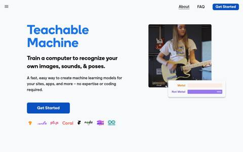
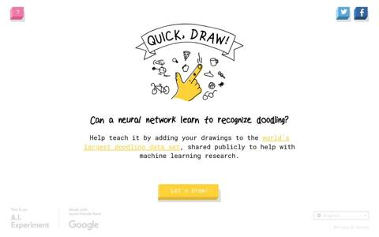
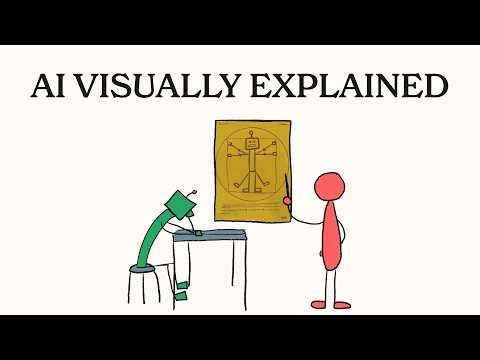
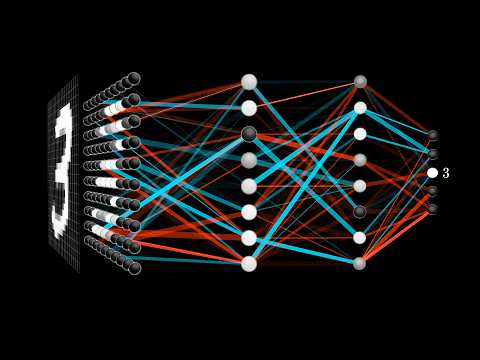

What AI is, how it differs from a hand-written rule, and what a real AI model sees when it looks at a picture
You do not need any background in computers for this lesson. You will start with tools you already use every day, see the one idea that separates "AI" from an ordinary program, and then try five real AI models yourself, right in your browser. It takes about 15 minutes.
By the end of this lesson you can:
A simple working definition: artificial intelligence (AI) is a computer system that does a task we would normally say needs human intelligence, such as recognizing a face, understanding speech or guessing what you meant to type. By that definition you probably used a dozen AI tools before breakfast. For each one, the useful question is not "is it smart?" but "did a person write the rules, or did it learn from examples?"
| Tool | What it does | Where its behavior came from | Type |
|---|---|---|---|
| Google Photos search | Finds every "dog" in your camera roll | Millions of photos people had labeled | Learned |
| Siri or Alexa | Turns your voice into words | Thousands of hours of recorded speech | Learned |
| Face unlock | Opens your phone for you and nobody else | Huge numbers of face images | Learned |
| Autocorrect | Guesses the word you meant | Billions of typed sentences | Learned |
| Netflix or Spotify | "Because you watched..." | What millions of other people chose | Learned |
| Weather app | Chance of rain tomorrow | Physics equations plus decades of past weather | Both |
| Classic spell check | Underlines words that are not in its list | A dictionary a person wrote | Rule |
| Calculator | 2 + 2 | Arithmetic written in by a programmer | Rule |
There are two broad ways to get a computer to do a job. The first is to write the rule yourself: "if the word is not in the dictionary, underline it," or "if the room is below 20 degrees, turn on the heat." The computer follows the rule exactly. It is predictable and easy to check, but someone has to be able to write the rule down.
Now try writing a rule for "what does a dog look like?" Dogs come in every size and color, photographed from every angle in every kind of light. Nobody can write that rule. Instead, you show the computer thousands of photos, each labeled "dog" or "not dog," and let it find the pattern on its own. This is called training. What comes out is a model, and the whole approach is called machine learning.
Pick any tool to see where it sits.
Each dot is one past day: how hot it was, and how many ice creams a shop sold. Tilt the line until it runs through the middle of the dots, then let the computer do it. Finding the line that best fits past examples, then using it to predict new ones, is machine learning at its simplest. Real models fit millions of examples, but the idea is the same. Lesson 1.3 goes further.
Each tab below runs a real model built by Google, inside your own browser. Nothing you show it is uploaded anywhere. Try the three sample photos in each tab, then upload one of your own. Each model was trained for one job only, so watch what it does well and where it struggles.
A few things are worth noticing. The percentages are the model's confidence, how sure it is, and confidence is not the same as being right. Each model does exactly one job: the hand model will not find your face, and the "Name it" model can only choose from the 1,000 categories it was trained on. Show it a chest X-ray and it will still pick something from its list, because it has no way to say "I don't know." And all of them get worse in odd lighting, at unusual angles, or with things they rarely saw during training.
You will hear AI, machine learning, deep learning and generative AI used as if they mean the same thing. They don't: each one sits inside the one before it. Tap a ring to see what it means and where the tools you just tried belong.
Any computer system doing a task that normally needs human intelligence, including rules a person wrote.
Everyday examples: a chess computer from the 1990s, a classic spell checker
AI that learns patterns from examples instead of following rules a person wrote.
Everyday examples: spam filters, Netflix recommendations
Machine learning that uses neural networks with many layers. Most modern image and speech AI, including every model in the lab above. Lesson 1.3 explains the layers.
Everyday examples: face unlock, Siri, Google Photos
Deep learning that creates new content: text, images or audio. Large language models (LLMs) are generative AI.
Everyday examples: ChatGPT, image generators
So every deep learning model is machine learning, and every machine learning model is AI, but not the other way around. A thermostat rule counts as AI under the broad definition, but it never learned anything.
Your experiments above show the three most important limits. AI is not thinking. A model finds statistical patterns in data; the hand model has no idea what a hand is for. AI is not general. Each model does the job it was trained for and nothing else, and it will not warn you when you ask it to step outside that job. AI is not always right. Every model makes mistakes, sometimes while sounding sure of itself. Lessons 1.4 and 1.5 show how to measure those mistakes and predict when they happen.
Answer each question to continue. Any answer is fine; read the explanation.
A new kind of scam email starts getting past two spam filters. Filter A follows rules a person wrote. Filter B learned from examples. What is the usual way to fix Filter B?
A learned model changes by learning from new labeled examples, not by someone editing a rule. Filter A is the one you fix by writing a new rule. Learned filters only keep up if someone keeps feeding them fresh, correctly labeled examples.
You give the "Name it" model a chest X-ray and it answers "fountain, 77%." What is the best explanation?
A model can only choose from what it was trained on, and it has no built-in way to say "I don't know." The 77% is how sure the model is, not the real chance it is right: here it is very sure and completely wrong. This is why a medical AI tool must be tested on exactly the kind of images it will see in practice.
ChatGPT is generative AI. Which of these is also true about it?
The terms nest: generative AI sits inside deep learning, which sits inside machine learning, which sits inside AI. So ChatGPT is all four. The image models in the lab are deep learning too; they just predict labels and points instead of creating new text.
Want more? Each of these takes a few minutes and opens in a new tab.




Next lesson: how does a model actually learn?
Lab photos from Wikimedia Commons: Yellow Labrador (CC BY-SA 3.0), Banana (Wikimedia Commons), Normal PA chest radiograph (CC0), Woman at her office table (CC BY 2.0), Woman holding dog in living room (CC BY 4.0), Stockholm man with headphones (CC0), Disabled BIPOC taking a selfie (CC BY 4.0), Man smiling by water (CC BY 4.0), Choosing and spreading each finger (CC BY-SA 4.0), A Peace sign photo (CC BY 4.0). Vision models: Google MediaPipe, run locally in your browser.